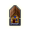
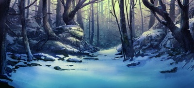

| Локация: | Охотничий домик | |
|---|---|---|
| Регион: | Нострия, Лес Йотун | |
| Карта: | | |
| Местность: | | |
| Незаметность: | 65 | |
| Открытие: | |
 Охотничий домик
|  | Район: | Охотничий домик |
|---|---|---|
| Местность: | |
| Расположенная близ моря восьмиугольная деревянная хижина отличается необычным планом постройки. У нее множество дверей, а в центре возвышается сторожевая башня. Вокруг домика суетятся исбьорны, человеколоси и козолюды. Они выполняют различные работы, некоторые из которых нелегко описать. | ||
Местные обитатели
- Чаркан, мастер-охотник
- Выдает квест "Призраки леса Йотун"